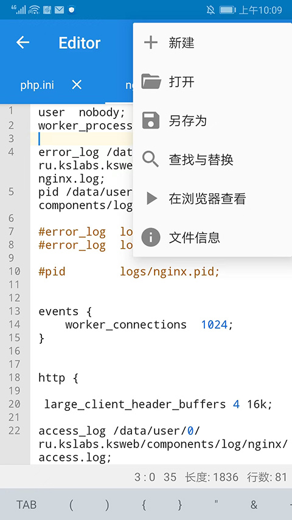

KSWEB 横向盘点：把一台手机变成完整的 Web 开发服务器，它做到了什么
从 LAMP 栈全支持到 CMS 一键部署，从内置编辑器到疑难排查，KSWEB 把 Android 设备变成了移动开发主机——这篇横向盘点把它的能力面完整铺开。
如果把 Web 开发环境比作一套厨房，KSWEB 做的事情就是把整套灶台、烤箱、食材柜、菜谱和收银台塞进一台手机里。它不是某个单一工具，而是一整套移动版的 LAMP 生态容器。它的官网上能看到完整的组件列表和版本历史，从 2010 年上线至今已经迭代了十几年，覆盖了 Lighttpd、Apache、Nginx 三款主流 Web 服务器，搭配 PHP 多个版本和 MySQL 数据库，外加一套还算好用的内置开发工具链。这篇文章就来系统性地盘点一下，这个让 Android 变身开发主机的应用，到底能做什么、哪些地方亮眼、又有哪些绕不开的局限。

核心能力一：三款 Web 服务器随便切，还能同时跑
KSWEB 最基础也最有辨识度的能力，就是把市面上三种主流 Web 服务器打包进了一个 APK：Lighttpd 轻量快速、Apache 老牌稳重、Nginx 高性能现代。三台服务器可以独立开关，也能同时运行各自监听不同端口。这种「三款通吃」的设计在同类应用里几乎没有第二个。
为什么三款都要？因为它们的优势场景不一样。Lighttpd 内存占用小，适合手机上轻量站点长期挂机；Apache 的 .htaccess 规则被大量 CMS 依赖（WordPress 的永久链接重写就靠它）；Nginx 的性能和反向代理能力适合跑多站点或做前端静态资源分发。KSWEB 让你不需要在安装时做选择题——想换就换，SETTINGS 里点一下的事。
实际用下来的亮点是端口零冲突设计：三个服务器默认监听不同端口（Lighttpd 8081、Apache 8080、Nginx 8082），即使同时启动也不会打架。如果某个端口被系统或其他应用占用了，状态页会直接弹红色警告，点进去就能看到具体是哪个端口有问题，在 TOOLS 里还有专门的端口测试工具验证空闲状态。
核心能力二：PHP 和 MySQL 版本灵活切换
光有服务器不够，LAMP 栈还缺 PHP 解释器和 MySQL 数据库。KSWEB 在这两方面做了比预期更细致的版本管理：
- PHP 组件支持 5.6、7.2、7.4、8.0、8.1、8.2、8.3 多个版本并行安装，每个服务器实例可以绑定自己偏好的 PHP 版本。这点很关键——Drupal 10 要 PHP 8.1+，老项目（比如某个 Drupal 7 网站）又只能跑 PHP 5.6，有了多版本切换，旧项目的维护就不用特意找一台老电脑。
- MySQL / MariaDB 内置完整的数据库管理能力，SETTINGS 里可以一键启动 phpMyAdmin，SQL 语句直接在浏览器里执行。数据库 root 默认空密码，KSWEB 也贴心地提供了修改指引。
PHP 版本快速对照（素材样本提炼）
| CMS | 最低 PHP | 推荐 PHP |
|---|---|---|
| WordPress 6.x | 7.4 | 8.2 / 8.3 |
| Joomla 5.x | 8.0 | 8.2 |
| Drupal 10 | 8.1 | 8.2 / 8.3 |
| MODX 3.x | 7.4 | 7.4 |
| OpenCart 4 | 7.3 | 8.0 |版本切换的实际体验是：在服务器标签页里选 PHP 版本，点重启服务器，几秒后新 PHP 就生效了。没有命令行，没有编译，不需要折腾。
核心能力三：CMS 一键部署，解压即装
这部分可能是普通用户最关心的能力。KSWEB 的 htdocs 目录就相当于服务器的 Web 根目录——你把 CMS 的压缩包解压进去，建一个 MySQL 空库，跑一遍安装向导，CMS 就跑起来了。素材样本里覆盖了 WordPress、Joomla、Drupal、MODX、OpenCart、Grav、Typecho 等几乎所有主流 CMS 的部署细节，它们的通用流程高度一致：解压 → 建库 → 向导三步法。
亮点在哪？
- Grav 这种平面文件 CMS 甚至不需要建库，拷进去直接访问就能用，在 KSWEB 里体验极度顺滑。
- phpMyAdmin 集成让建库这件事完全图形化，不用敲命令，新手也能几分钟搞定。
- 安装向导自带环境检测：Joomla 和 Drupal 在安装过程中会自动检测 PHP 扩展是否齐全、目录权限是否正确，缺什么就标红提示，按照提醒切一下 PHP 版本或启用扩展就行。

核心能力四：内置开发工具链，手机上也能写 PHP
如果只是跑 CMS，KSWEB 还不算独特。真正让它从「服务器容器」升级为「开发环境」的，是内置的开发工具链：
- 代码编辑器：支持 PHP / HTML / CSS / JS 语法高亮、实时语法检查、自动补全、括号引号自动补配对。4.09 版本起还加了暗色主题，深夜长时间写代码的时候护眼很多。
- 物理键盘快捷键全支持：接个蓝牙键盘，Ctrl+S 保存、Ctrl+F 查找、Ctrl+G 跳转行号、Ctrl+/ 注释——这些 PC 编辑器的常规操作在 KSWEB 上一个不缺。对 Yii2、Laravel 这类命名空间密集的项目尤其重要，触屏打命名空间能把人逼疯。
- 软键盘增强：就算不接物理键盘，编辑器也对屏幕软键盘做了优化，方向键快捷入口、PHP 常用符号提示、Tab 缩进都考虑到了。
核心能力五：排错和容错机制，状态页+日志双保险
服务器启动失败可能是新手最头疼的问题：红图标亮起来了，但到底是为什么？KSWEB 在这点上做得相当友好，排错路径分两层：
第一层：状态页红色提示。 每个服务器实例的状态旁边如果出现问题，会有红色高亮的错误提示直接显示在主界面上，点一下就能看到简短摘要。端口被占用、配置文件语法错误这类常见问题，状态页一眼就能识别。
第二层：服务器标签页的完整日志。 如果红提示太简略，或者根本没提示——每个服务器标签页里都有 Log File / Log 按钮，点一下直接打开完整运行日志，最后几行就是真正的报错信息。素材样本里给了好几个典型日志片段：
# 端口被占用
server socket bind failed: Address already in use
# Apache 配置语法错误
Syntax error on line 45 of httpd.conf: Invalid command 'Restart'
# Lighttpd 配置拼写错
'server.modules' includes unknown-modkey 'mod_rewrte'
# PHP 组件损坏
PHP not found at /data/data/.../php/bin/php日志读懂了，解决路径就清晰了：换端口、Edit Configuration 改配置、SETTINGS 里 Components 重下 PHP 组件，各有各的工具入口，不需要翻来覆去找。
核心能力六：安装分发对国产系统做了适配
这一点在同类应用里也是少见的。国产 Android ROM（MIUI、ColorOS、HarmonyOS、OriginOS、OneUI）对未知来源应用的限制比原生 Android 严格得多，首次安装从下载拿到的 APK 时几乎必然被拦截。KSWEB 的文档里专门给每个主流国产系统写了放行步骤，甚至包括了：
- 允许本次安装的一次性放行（Android 10+ 特性，比永久放开更安全）
- MIUI 的联网安全扫描、ColorOS 的激进扫描等待、HarmonyOS 的风险提示确认
- ADB 开发者一次性放行的快捷命令
- 包解析失败、签名冲突、存储不足等其他安装失败场景的排查表
这种把国产系统兼容问题写进文档、分类分系统给出操作路径的做法，能看出来作者是真的跑过这些坑。
短板也要说清楚
盘点了这么多优点，几个绕不开的局限必须坦诚：
第一，Android 后台被杀。 手机厂商的电源优化策略会在后台杀掉长时间运行的应用——你可能只是锁屏 10 分钟，回来就发现 Lighttpd 进程已经被系统收了。KSWEB 文档里也承认这点，给的建议是在系统设置里给 KSWEB 加「无限制」电源策略、锁 Wi-Fi、关省电模式，但实际效果因 ROM 而异，部分系统就是杀后台没商量。
第二，资源消耗。 三台服务器+PHP+MySQL 同时跑起来，后台内存占用不算低，老手机或低配机型可能有明显卡顿。长期挂机建站的场景，推荐还是用专门的设备或 root 模式。
第三，组件安装依赖网络。 KSWEB 的 PHP、MySQL 等组件需要从境外服务器下载，国内网络环境下偶尔会失败，需要多试几次或用加速器。
第四，不支持虚拟主机管理界面。 虽然能跑多站点，但没有 cPanel 或宝塔那种可视化的站点管理面板，每个站点的 vhost 配置还是要手动改配置文件。
什么样的人该用它
最后给出三类典型用户画像：
折腾派开发者 — 平时用 PC 写代码，但总想试试「手机上能不能也跑起来」的那群人。KSWEB 让你在通勤路上掏出平板、接个蓝牙键盘，就能改一段 PHP、跑一遍 MySQL 查询、打开浏览器调页面——不用带笔记本，不用找 Wi-Fi，移动开发主机的名号名副其实。
轻量级站点运维 — 如果你的个人博客或小团队官网流量不大、CMS 又不是重负载类型（WordPress、Grav、Typecho 这种），一台闲置的旧手机装个 KSWEB 就能托管，配合内网穿透或 IPv6 访问，成本几乎为零。当然前提是能搞定后台被杀的问题。
学习型用户 — 想搞懂 LAMP 栈是怎么回事，但又不想在 PC 上安装 VMware、Ubuntu 虚拟机那一整套。KSWEB 提供了一个最低门槛的实验环境：每个组件都能独立开关、配置都能在图形界面修改、日志都是可观测的，比虚拟机直观得多。
综合来看，KSWEB 可能不是最现代化的移动 Web 开发方案，但它在 Android 设备上实现的这套完整 LAMP 生态——从服务器、PHP、MySQL 到编辑器、排错、CMS 部署——确实是独一无二的。十几年的迭代让它积累了大量针对真实用户场景的细节优化，比如国产系统安装适配、端口零冲突设计、日志双保险排错机制，这些不是靠代码堆砌就能实现的，是踩了无数坑才磨出来的。关于这套移动 LAMP 栈的完整资料，我在GitHub、Gitee 和 GitCode 上都同步维护了一份仓库，方便不同地区和网络环境的朋友随时查阅。